HTML Basics: Common Elements
Heading tags: <h1> to <h6>
Headings are used to write titles and subtitles on a web page. They make your content look neat and help readers understand what each part is about. For example, look at how headings and subheadings appear on this Wikipedia page:
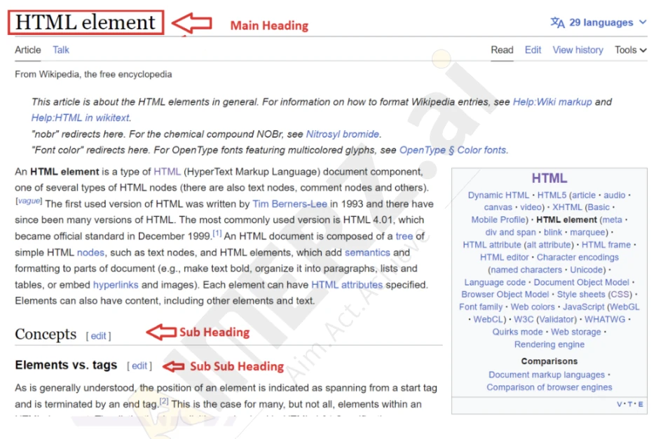
How headings work
HTML has 6 heading tags, <h1> to <h6>:
<h1>→ the biggest heading (main title)<h2>→ a little smaller (sub-title)<h3>to<h6>→ keep getting smaller as the level increases
<!DOCTYPE html>
<html lang="en">
<head>
<meta charset="UTF-8">
<meta name="viewport" content="width=device-width, initial-scale=1.0">
<title>Document</title>
</head>
<body>
<h1>Welcome to My Website</h1>
<h2>About Me</h2>
<h3>My Hobbies</h3>
<h4>Reading</h4>
<h5>Comics</h5>
<h6>Favorite Characters</h6>
</body>
</html>Output:
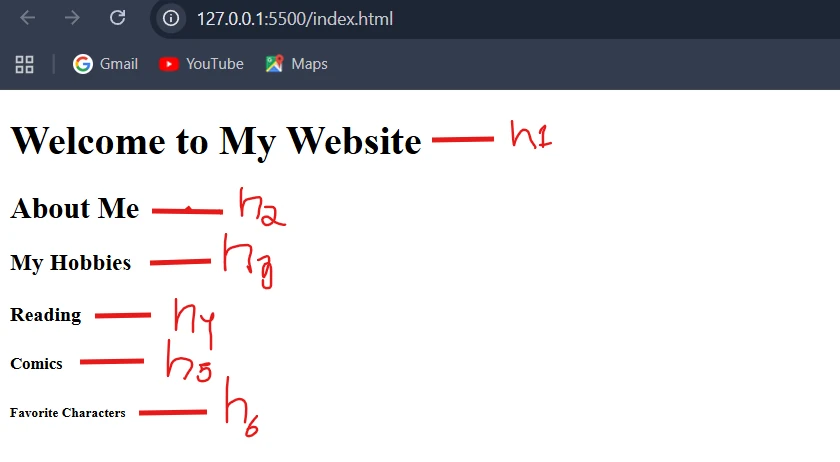
h1 to h6 is a little smaller than the one above.Why heading tags matter
Headings are not just “big text”. They help both people and machines understand your page.
1 · Structure: clear organisation
Headings make your page well organised and easy to read. They act like titles and subtitles that divide your content into small, clear parts, just like a book:
<h1>My Website</h1>
<h2>About Me</h2>
<h3>My Hobbies</h3>h1 is the book title, h2 is the chapter name, h3 is a section inside that chapter. This helps visitors quickly find what they’re looking for.2 · SEO
Search Engine Optimisation. Google reads your headings to learn what the page is about, so clear headings help it show your page to the right people.
3 · Accessibility
People using screen readers (tools that read text aloud) can jump from heading to heading to find what they need.
<h1> per page, and don’t skip levels (go h2 → h3, not h2 → h5).The paragraph tag <p>
The paragraph tag holds normal text, just like a paragraph in your notebook. Everything between <p> and </p> becomes one paragraph.
Opening tag · a new paragraph starts
Content · the paragraph’s text
Closing tag · the paragraph ends
<!DOCTYPE html>
<html lang="en">
<head>
<meta charset="UTF-8">
<meta name="viewport" content="width=device-width, initial-scale=1.0">
<title>Document</title>
</head>
<body>
<p>This is my first paragraph in HTML.</p>
<p>HTML helps to display text clearly on a web page.</p>
</body>
</html>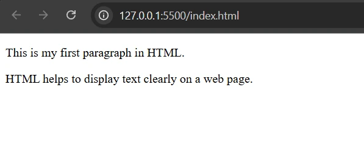
<p> creates a new paragraph, and the browser automatically adds space before and after each one to keep them separate.<p> and <br>.Line break <br>
The <br> tag creates a line break: whatever follows it starts on a new line, inside the same paragraph.
<h2>Using the br tag</h2>
<p>
My name is Abhi.<br>
I am learning HTML.<br>
I love creating web pages.
</p>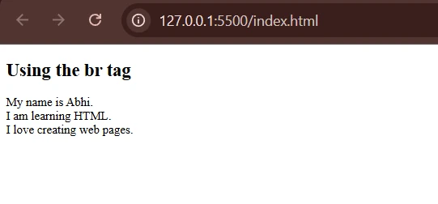
<br> pushes the next words onto a new line, with no extra paragraph gap.<br> does not need a separate closing tag (you may also see it written <br />). Use it for line breaks that belong to the content, like addresses or poems, not for adding space between blocks.Formatting tags: making words stand out
Formatting tags style and decorate text so certain parts stand out: bold, italic, underlined and more. When you write an article you might highlight headings, make important words bold or italicise quotes; HTML formatting tags let you do all of that on a web page.
Some formatting tags only change how text looks, not what it means. Others also tell the browser, search engines and screen readers what the text means (for example, “this is important”). That difference is the most important idea in this section.
Bold: <b> and <strong>
<b> · bold for style
<b> makes text bold. It catches the eye but adds no extra meaning; it only changes the appearance.
<p>This is a <b>bold</b> word.</p>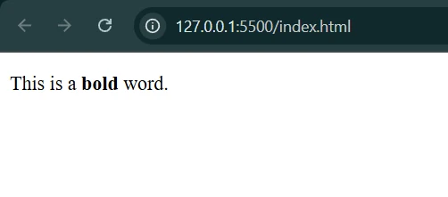
<b> turns bold.<strong> · bold because it is important
<strong> also displays bold, but it tells browsers, search engines and screen readers that the text is important, serious or urgent.
<p>This is an example of <strong>strongly emphasized</strong> text.</p>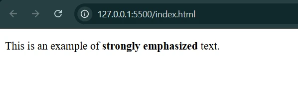
<b>, but the words are now marked as important.A real-world use: imagine you’re reading a safety note.
<p><strong>Warning:</strong> Don't touch the hot surface!</p>On a safety notice, “Warning” is not bold for decoration. It is bold because it matters. That is <strong>.
<b> just makes text look bold. <strong> makes it bold and says “this part is important!”Italic: <i> and <em>
<i> · italic for style
<i> makes text italic, slanting slightly to the right. Use it to set a word apart in style: book titles, foreign words, special terms.
<p>This is an <i>italicized</i> word.</p>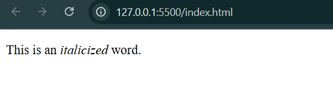
<i> slants to the right.<em> · italic because it is stressed
<em> (emphasis) also shows italic, but it tells the browser: “Hey, stress this word. Give it special attention!” Screen readers can change their voice for it.
<p>I said I wanted <em>coffee</em>, not tea!</p>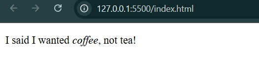
<i>, but coffee is the word being stressed.<em> highlights a word with meaning, so both readers and screen readers know which word you are stressing.
| Tag | Looks like | Adds meaning? | Use for |
|---|---|---|---|
<i> | italic | No, style only | book titles, foreign words, terms |
<em> | italic | Yes: stress | the word you would say louder |
Highlight and fine print: <mark> and <small>
<mark> · highlighter pen
<mark> highlights text, usually with a yellow background, to draw attention to relevant information, such as search terms or key findings in a document.
<p>This is <mark>highlighted</mark> text.</p>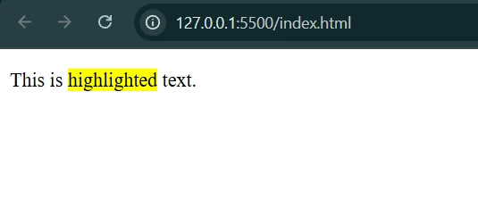
<small> · the small print
<small> makes text smaller than the normal text. It is like a small note under the main text: a disclaimer, copyright line or condition.
<p>All rights reserved. <small>© 2025 MyWebsite</small></p>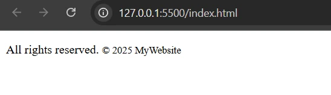
<small> is drawn smaller than the text before it; its meaning does not change.<mark> draws the eye (often to “what is relevant right now”), and <small> marks side comments and fine print. If you mean “important”, use <strong>.Edits and outdated text: <del>, <ins>, <s>
<del> · deleted
Text that was removed or replaced. Shown with a line through it, like crossing out a word in your notebook.
<ins> · inserted
Text that was added. Usually shown underlined to flag new or updated content.
<s> · no longer true
Text that is outdated or no longer accurate, but not a document edit. Also shown with a line through.
<del> · deleted text
<p>The old price was <del>$100</del> now it's $80.</p>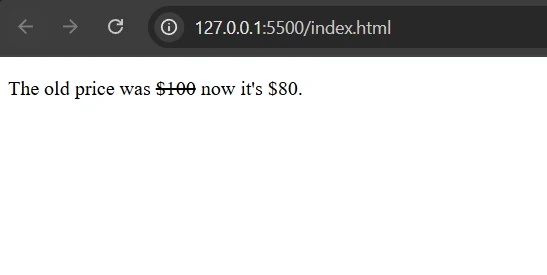
$100 is crossed out, the way a shopkeeper strikes out an old price and writes the new one beside it.<ins> · inserted text
Like underlining a new word in your notebook to show it was recently added.
<p>The new price is <ins>$80</ins>.</p>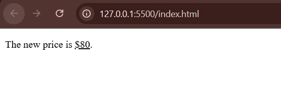
$80 is underlined.<s> · no longer true
Like writing something on paper and later drawing a line over it to show it is not valid any more.
<p>The old price was <s>$50</s> now it's $30.</p>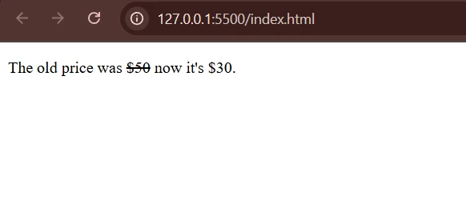
<del>: a line through the outdated price.Use both together for a “what changed” view: <p>The old price was <del>$100</del> now it's <ins>$80</ins>.</p>
<del> or <s>? They look the same. Use <del> when you actually removed or replaced something in the document. Use <s> when something is simply no longer true, like an old price or outdated info.Below and above the line: <sub> and <sup>
<sub> · subscript
Small text written slightly below the normal line, like writing a small note or number below a word or letter. Chemical formulas like H₂O, or math like x₂.
<sup> · superscript
Small text written slightly above the normal line, like writing a small number or note above a word or letter. Powers like x², dates like 1st, footnote numbers.
<p>Water formula is H<sub>2</sub>O.</p><p>Area = a<sup>2</sup></p>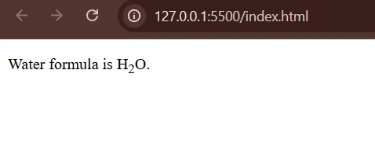
<sub>: the 2 in H2O drops below the line.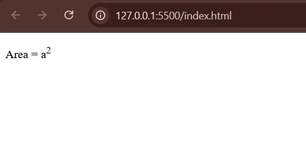
<sup>: the 2 in a2 is lifted above the line.sub sits below it, sup above it. The same works for E = mc2.The obsolete <big> tag
<big> was part of older HTML versions. It made the enclosed text one size larger than the text around it.
<p>This is a <big>bigger</big> word.</p>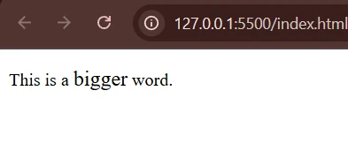
<big> is obsolete in HTML5. Browsers still display it, but it is not valid modern HTML. To change size, use CSS (for example font-size), which you’ll learn later.<mark> for matched search terms, <del>/<ins> for a “what changed” diff view, <strong> for warnings. Screen readers, search engines and enterprise accessibility audits all read that meaning.Formatting tags at a glance
| Tag | Default look | Meaning | Example use |
|---|---|---|---|
<b> | bold | style only | product names in a review |
<strong> | bold | important / urgent | “Warning:” |
<i> | italic | style only | book titles, foreign words |
<em> | italic | stress | “I wanted coffee” |
<mark> | highlighted | relevant, draw attention | search terms |
<small> | smaller | side comment, fine print | copyright, conditions |
<del> | removed from the document | old price replaced | |
<ins> | underlined | added to the document | new price |
<s> | no longer accurate | outdated info | |
<sub> | H2O | subscript | chemical formulas |
<sup> | x2 | superscript | powers, footnotes |
<big> | larger | obsolete | don’t use; use CSS |
Key terms
- Heading tags
- The six elements
<h1>to<h6>for titles and subtitles;h1is the most important and largest,h6the least. - SEO
- Search Engine Optimisation: making a page easy for search engines like Google to understand, so it reaches the right searchers. Clear headings help.
- Accessibility
- Making a website usable by everyone, including people with disabilities who use tools such as screen readers.
- Screen reader
- Software that reads a web page aloud; users can jump between headings and hear emphasis from tags like
<strong>and<em>. - Paragraph (
<p>) - A block element for normal text; the browser adds space before and after each one.
- Line break (
<br>) - A void element that moves the following content onto a new line within the same block, without a paragraph gap.
- Formatting tags
- Inline tags that change how text looks, and in some cases what it means, such as bold, italic, highlighted or struck-through text.
- Semantic tag
- A tag that carries meaning, not just style, for example
<strong>(important) or<em>(stressed), compared with<b>and<i>. <del>vs<s>- Both draw a line through text;
<del>marks content removed from the document,<s>marks content that is no longer accurate. - Subscript / superscript
- Small text placed below (
<sub>) or above (<sup>) the normal line, as in H₂O or x². - Obsolete tag
- A tag from older HTML that is no longer valid in HTML5, such as
<big>; use CSS instead.
Self-check
Pick an answer. You’ll see right away whether it’s correct and why.
How many heading levels does HTML have?
- 3
- 6
- 8
- As many as you like
<h1> through <h6>: six levels, from most to least important.
You want slightly bigger text for a note that is not a section title. What should you do?
- Wrap it in
<h3> - Wrap it in
<h1> - Use
<big> - Keep it in
<p>and change the size with CSS
Headings describe the outline of the page, not font size, and <big> is obsolete. Size is a CSS job.
Which tag says “this text is important”, not just “make it bold”?
<strong><b><mark><i>
<strong> looks bold and also carries the meaning “important” for screen readers and search engines.
You write three lines of an address in one <p>, pressing Enter after each line in your code. How does the browser show it?
- Three lines
- Three paragraphs
- One line, with the line breaks collapsed into spaces
- An error
HTML collapses Enter and extra spaces into a single space. Add <br> where each new line should start.
Which line correctly shows the chemical formula for water?
H<sup>2</sup>OH<sub>2</sub>OH<small>2</small>OH<br>2O
The 2 in H₂O sits below the line, so it is subscript: <sub>.
A shop page shows a price that was changed from ₹500 to ₹450. Which pair fits best?
<mark>and<small><b>and<i><sub>and<sup><del>for ₹500 and<ins>for ₹450
<del> marks removed content (struck through) and <ins> marks inserted content (underlined).
What is the difference between <i> and <em>?
<em>is bold,<i>is italic- None at all
- Both look italic, but
<em>also marks the word as stressed <i>is obsolete
They look the same by default; <em> adds meaning that screen readers can voice.
Why do headings help people who use screen readers?
- They can jump from heading to heading to find a section
- Headings are read louder
- Screen readers skip everything except headings
- Headings change the page colour
Screen readers list the headings so users can navigate a page by its outline instead of listening to everything.
All of it, in one sentence
Use h1–h6 to build the page’s outline, <p> for text and <br> for line breaks, and choose formatting tags by meaning: strong/em for importance and stress, b/i for style, plus mark, small, del, ins, s, sub and sup for their special jobs.
— Vishwa Mohan